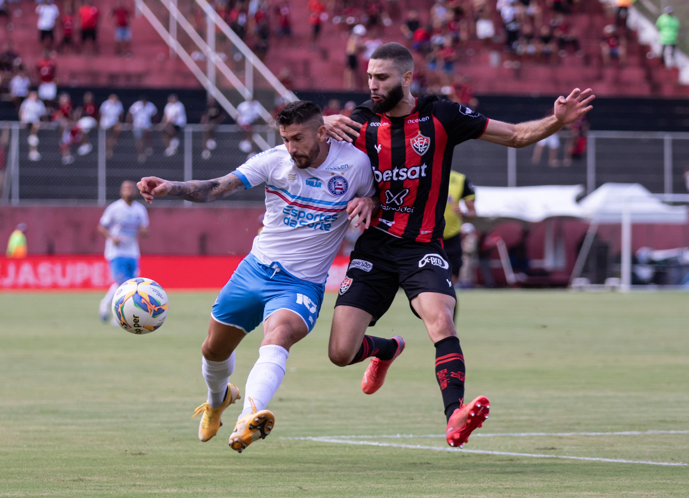

Vitória vira e vence primeiro Ba-Vi da temporada
No primeiro Ba-Vi da temporada, o Vitória virou e bateu o Bahia por 3 a 2 no Barradão em confronto válido pela sétima rodada do Campeonato Baiano. Osvaldo (2x) e Alerrandro marcaram para o Rubro-negro. Thaciano e Everton Ribeiro fizeram os gols do Tricolor, que ainda teve dois jogadores expulsos.
